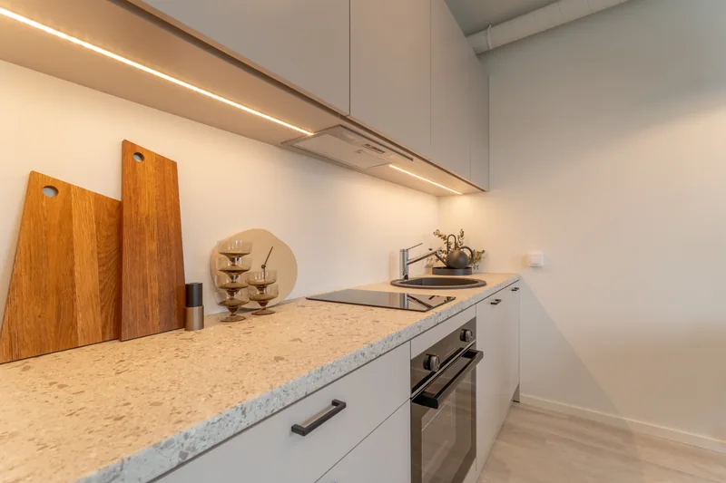

Kui palju maksab kinnisvarafoto ja mis hinda mõjutab
Lühivastus
Eestis jääb korteri pildistamine tavaliselt 80–200€ ja eramaja 100–350€ vahele, olenevalt suurusest ja lisadest. Meil algab korter 85€-st ja eramaja 109€-st. Hinda mõjutavad objekti suurus, fotode arv, tähtaeg, lisad – droon, staging, video – ja sõidumaa.
Kinnisvarafoto hinda on raske võrrelda, sest kaks pakkumist sisaldavad harva sama asja. Üks räägib fotode arvust, teine ajast kohapeal, kolmas ei ütle kumbagi. Vaatame, mis hinna sisse päriselt läheb.
Mis hinna moodustab
Kohapeal pildistamine on tegelikult väiksem pool tööst. Korteri puhul kulub kohapeal 45–75 minutit, eramaja puhul üks kuni kaks tundi. Järeltöötlus võtab tavaliselt sama kaua või kauem: iga foto käiakse eraldi läbi – säri, vertikaalid, värvitasakaal, akna sisu, ühtlustamine ülejäänud komplektiga.
Sinna lisandub sõit, tehnika kulum ja see osa, mida keegi ei arveta – aja kokkuleppimine, failide üleandmine ja hilisemad parandused.
Viis asja, mis hinda tõstavad või langetavad
- Objekti suurus. Rohkem tube tähendab rohkem kaadreid ja rohkem töötlust. Enamik hinnakirju on sellepärast astmelised.
- Fotode arv. Küsi alati, mitu töödeldud fotot hinna sees on. See on ainus number, mida saab kahe pakkumise vahel otse võrrelda.
- Tähtaeg. 48 tundi on mõistlik ootus. Kiirem tähtaeg maksab peaaegu alati juurde.
- Lisad. Droonivõtted ja video on eraldi teenused. Nad on sageli mõistlikud – aga ainult siis, kui neid päriselt vaja on.
- Sõidumaa. Väljaspool linna hakkab transport hinnas rolli mängima. Meil on see 0,20€/km edasi-tagasi ja alates 170€ tellimusest tasuta.
Meie hinnad
| Pakett | Kellele | Fotosid | Hind |
|---|---|---|---|
| Korter – Põhi | stuudio, 1–2 tuba | 25–30 | 85€ |
| Korter – Standard | 3–4 tuba | 35–45 | 95€ |
| Korter – Premium (foto + droon + video + Reel) | 5+ tuba, korter või ridaelamu | 50+ | 479€ |
| Eramaja – Põhi | kuni 99 m² | 30–40 | 109€ |
| Eramaja – Standard | 100–149 m² | 40–50 | 129€ |
| Eramaja – Premium (foto + droon + video + Reel) | alates 150 m² | 55+ | 583€ |

Lisadena droonifotod +59€, Listing Reel video alates 150€ ja kodu tutvustusvideo 240–350€. Täpne ja alati kehtiv nimekiri on hinnalehel.
Hinnad on avalikult väljas meelega. Kinnisvarafotograafias on tavaline, et hinda küsitakse eraldi kirjaga – see teeb võrdlemise tüütuks ja lükkab otsuse edasi.
Kuidas kahte pakkumist võrrelda
Kui sul on kaks hinda, küsi mõlemalt viis asja. Need viis muudavad võrdluse ausaks:
- Mitu töödeldud fotot on hinna sees?
- Millise tähtajaga?
- Kas droon ja video on sees või eraldi?
- Kas transport on sees?
- Kas võin fotosid kasutada ka muul otstarbel – üürikuulutuses, sotsiaalmeedias, hiljem uuesti müües?
Viimane on see, mis kõige sagedamini üllatab. Küsi kasutusõiguse kohta enne, mitte pärast.
Kas see tasub end ära
Korteri puhul, mille hind on 150 000€, on 85€ foto umbes 0,06% tehingu väärtusest. See on suurusjärk, mille juures arutelu „kas 85 või 110“ ei ole enam sisuline – sisuline on ainult see, kas fotod töötavad.
Arvutuse tegime numbritega läbi eraldi artiklis, koos viidetega uuringutele.
Millal odavaim valik on õige valik
Olgem ausad – mitte iga objekt ei vaja täispaketti:
- Üüripind, mis vahetab üürnikku igal aastal: piisab väiksemast komplektist. Vaata üürikorteri artiklit.
- Odav objekt maapiirkonnas, kus kogu tehing on väike: transport võib maksta rohkem kui pildid.
- Juba müüdud objekt, mille kuulutus on formaalsus.
Ülejäänud juhtudel on foto see osa müügiprotsessist, kus paarikümne euro kokkuhoid maksab kõige tõenäolisemalt tagasi mitmekordselt – ja mitte sinu kasuks.
Kõik hinnad on avalikult kirjas. Regulaarselt tellivatele maakleritele ja büroodele on eraldi kuupakett – vaata kinnisvarabüroodele mõeldud lehte.
Vaata hindu